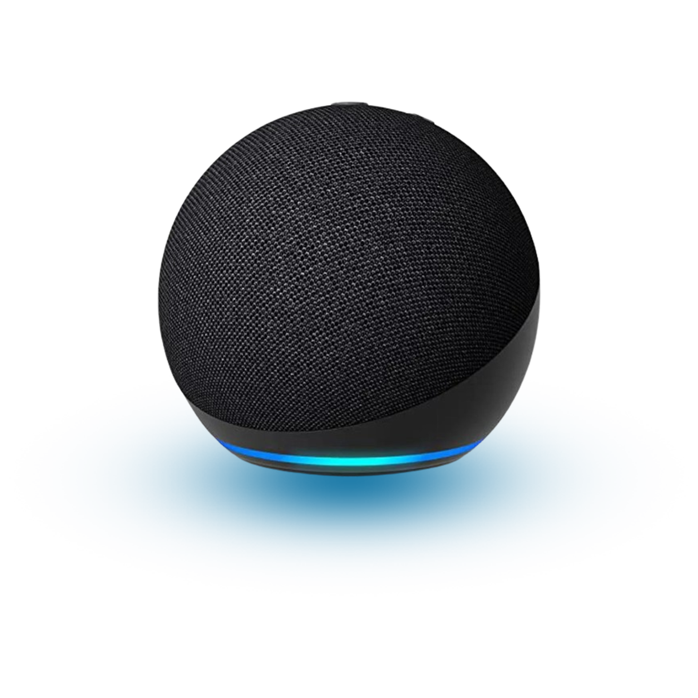

Domótica
Automatizar y controlar los sistemas del hogar
La domótica es la tecnología que automatiza,
controla y monitorea inteligentemente
los sistemas del hogar.

La domótica es la tecnología que automatiza,
controla y monitorea inteligentemente
los sistemas del hogar.
Somos una empresa que se dedica a hacer que las casas sean más inteligentes y cómodas usando
tecnología. Imaginen que puedes controlar las luces, la temperatura, la seguridad y otros aparatos de
sus casas solo usando tu teléfono o con tu voz. Nosotros creamos y vendemos esos productos que
permiten hacer todo eso.
Nuestro objetivo es que las personas puedan vivir mejor y más cómodamente en sus casas sin tener
que hacer mucho esfuerzo. Queremos que nuestras soluciones sean accesibles para muchas
personas, así que trabajamos duro para que sean fáciles de usar y personalizar según las necesidades
de cada hogar y además, siempre estamos buscando nuevas ideas y tecnologías para mejorar nuestros productos
y hacer que la vida de las personas sea aún más sencilla y segura.

Soy Hector Villegas, fundador, programador,
desarrollador y diseñador gráfico del proyecto
H-Space.
Desde hace mucho tiempo me ha llamado la atención y
me ha generado mucha curiosidad el internet de las
cosas, y este proyecto ha sido la forma de profundizar en
ello y aprender de las áreas de la Domótica en el
mundo.